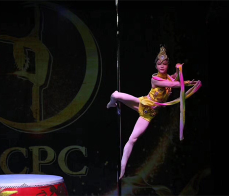

灵子舞蹈

现在作为舞蹈培训这方面每个人学习的目的都不同，有的人是以兴趣为主 有的人是以做教练为主，但是大部分作为兴趣的舞蹈学习者基本都是以锻炼为主算不上真正的对舞蹈的热爱，真正热爱舞蹈的他们都会选择舞蹈教练班培训作为自己的目标，因为只有这样才能坚持自己的目标和梦想，兴趣班舞蹈学习者所跳的舞基本都很难拿的出手，但是舞蹈教练班培训出来的学习者学出来的舞蹈就是和普通兴趣班所跳的舞完全不一样，其实现在随着条件的优越，舞蹈这个行业是越来越受欢迎了，以前在古代只有贵人富人才有资格享受看到舞蹈，而现在舞蹈变的很平民，舞蹈是一种最容易吸引人眼光的一种方式作为用来打广告是再好不过的了。试问天下有谁不喜欢看跳舞的。无锡作为一个江南水乡之地相对来说培训舞蹈这个行业也是非常兴盛的而且还在每年逐步的快速增长 所以现在舞蹈教练班学员或者说是舞蹈老师是非常缺的，不管舞蹈是用来健身还是用来做事业都是非常好的一种选择，目前比较在无锡流行的舞蹈 像爵士舞培训，钢管舞培训 ，中国舞培训，古典舞培训，民族舞培训，，街舞培训 现代舞培训等等的都是 舞蹈学校最缺的老师都是供不应求，学了舞蹈能干嘛？可以教小孩跳舞，可以做商演帮商家吸引眼球做广告，可以在健身房做教练，等等的，在江苏地区其实比较受欢迎的中国舞 古典舞都是非常不错的商演选择 在无锡，常州，南通，苏州，泰州，盐城，江阴，宜兴，南京，等等的非常缺商演活动需要演员，在舞蹈培训行业里也是最火热的

上一篇：成人零基础能学舞蹈吗？
下一篇：学古典舞的好处